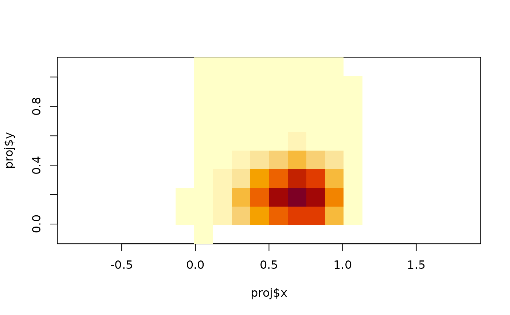

Calculate basis functions on fm_mesh_1d() or fm_mesh_2d(),
without necessarily matching the default function space of the given mesh
object.
Usage
fm_raw_basis(
mesh,
type = "b.spline",
n = 3,
degree = 2,
knot.placement = "uniform.area",
rot.inv = TRUE,
boundary = "free",
free.clamped = TRUE,
...
)Arguments
- mesh
An
fm_mesh_1d()orfm_mesh_2d()object.- type
b.spline(default) for B-spline basis functions,sph.harmfor spherical harmonics (available only for meshes on the sphere)- n
For B-splines, the number of basis functions in each direction (for 1d meshes
nmust be a scalar, and for planar 2d meshes a 2-vector). For spherical harmonics,nis the maximal harmonic order.- degree
Degree of B-spline polynomials. See
fm_mesh_1d().- knot.placement
For B-splines on the sphere, controls the latitudinal placements of knots.
"uniform.area"(default) gives uniform spacing insin(latitude),"uniform.latitude"gives uniform spacing in latitudes.- rot.inv
For spherical harmonics on a sphere,
rot.inv=TRUEgives the rotationally invariant subset of basis functions.- boundary
Boundary specification, default is free boundaries. See
fm_mesh_1d()for more information.- free.clamped
If
TRUEandboundaryis"free", the boundary basis functions are clamped to 0/1 at the interval boundary by repeating the boundary knots. Seefm_mesh_1d()for more information.- ...
Unused
Author
Finn Lindgren finn.lindgren@gmail.com
Examples
loc <- rbind(c(0, 0), c(1, 0), c(1, 1), c(0, 1))
mesh <- fm_mesh_2d(loc, max.edge = 0.15)
basis <- fm_raw_basis(mesh, n = c(4, 5))
proj <- fm_evaluator(mesh, dims = c(10, 10))
image(proj$x, proj$y, fm_evaluate(proj, basis[, 7]), asp = 1)

# \donttest{
if (interactive() && require("rgl")) {
plot_rgl(mesh, col = basis[, 7], draw.edges = FALSE, draw.vertices = FALSE)
}
# }